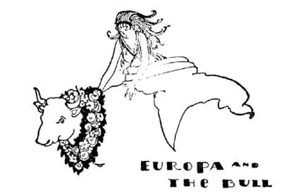
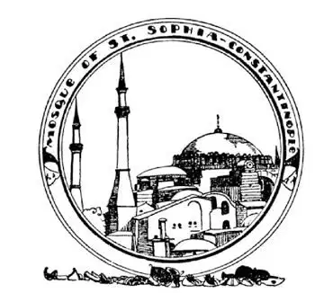
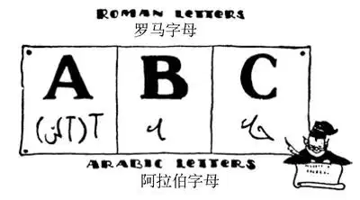
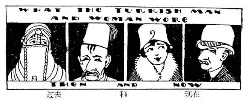

47
The Land of the New Moon
新月之国

EVERY place is east of some other place. America is east of China. Europe is east of America. But the only place called “THE East,” with a capital THE, is the land east of Europe. This land east of Europe is the continent of Asia. It’s the biggest continent of all.
Long years ago in fairy-tale days a god in Asia was in love with a beautiful girl whose name was Europa. Now a god was not supposed to love a human being, so the god turned himself into a snow-white bull and, persuading Europa to get on his back, he ran away with her. At last the bull came to a strait of water and swam across it with Europa still on his back. On the opposite side of the strait where the bull landed with Europa on his back was a great new continent, and to-day we call this continent Europe—after Europa.
People who do not believe in fairy-tales say, however, that Europe is a name that simply means The Land Where the Sun Goes Down, and they say that Asia, the land from which Europa and the bull came, means The Land Where the Sun Gets Up.

The god changed himself into a white bull and ran away with Europa
这个神化身为一头雪白的公牛，带着欧罗巴逃走了
The strait across which the bull carried Europa we still call Bull-Carry Strait, for in the Greek language “bull-carry” is Bosporus, and Bosporus is the name on the map.
People built a city where Europa landed, and about a thousand years afterward a Roman Emperor named Constantine, who was the first Christian emperor, moved his capital from Rome to this city and it was called after him, Constantinople.
After another thousand years Constantinople was captured from the Christians by some people from Asia called Turks, who had a ruler called the Sultan. Most of the people in Europe are Christians, but the Turks are not Christians. They do not believe in Christ. They believe in a god whom they called Allah and a man named Mohammed who they say was Allah’s messenger on earth. So we call the people who believe in Mohammed Mohammedans or Moslems.
One dark night many years ago an army was approaching Constantinople, but it was so dark the people in the city did not see it and did not know they were about to be attacked. Suddenly the moon shone out from behind a cloud. By the light of the moon the watchmen saw the enemy, sounded the alarm, and the city was saved. Ever since then the Turks have used the new moon on their churches as we do a cross and a new moon and a star on their flag, as these had brought good luck. A new moon is called a “crescent.” The Turks have a society, the same society as our Red Cross; but as a cross is a Christian sign, they don’t use it, so they call their society the Red Crescent.
One of the largest churches in the World was built in Constantinople before the Turks came. It was called the church of Holy Wisdom, which in Greek is Santa Sophia. Perhaps you may know a girl named Sophie. Well, she may be wise or she may not, but her name means wise. When the Turks captured the Christian city of Constantinople they changed Santa Sophia and all the other churches in the city to Mohammedan churches, which are called mosques, and they tore down the crosses on top of the churches and put up in the place of each a crescent. There are now over eight hundred mosques in the city. Finally not very many years ago they changed Constantinople’s name to Istanbul.

They turned the church into a mosque
他们把教堂改成了清真寺
You might think it would be better if I hadn’t told you the old name of Istanbul. Then you would have one less long name to remember. But Constantinople was the name of the city for a much longer time than Istanbul has been. Even now Constantinople is a better-known name than Istanbul. I won’t, however, tell you what the city was called before it became Constantinople. Two names are enough to learn about any city. So if you want to know Istanbul’s earliest name you’ll have to ask some one or find it in some other book.
The Turks also built, close to each mosque, one or more candle-shaped towers, called minarets. About midway of a minaret is a balcony, and five times a day a priest appears on this balcony and calls the people of the city to prayer. This is done instead of ringing church bells as they do in Christian churches, for Mohammedans do not use bells, even in their own homes. When they want to call a servant they clap their hands. The first call to prayer is about five o’clock in the morning—sort of an alarm clock— when the priest says, “Come to prayer. Prayer is better than Sleep.”
Not many people get up at that time to pray, however. When he calls out, a very good Mohammedan goes into the nearest mosque to pray, or he gets down on his knees and bows his head till it touches the ground. Whenever he goes into a mosque he must first wash his face, hands, and feet, so almost every mosque has a pool or fountain, sometimes on the steps, sometimes in the courtyard, where the people can wash before they enter. For this reason also there are a great many fountains throughout Istanbul. They are not for drinking—they are not for beauty; they are for washing. The mosques are for men only. Women used to be allowed in little hidden cells in the mosque, where they could not be seen, for women and children were supposed neither to be seen nor heard. The Mohammedans’ Sunday is our Friday. The Mohammedan goes to the mosque every day if he can, but always on Friday.

Turkish writing has been changed
土耳其改变了文字
An inlet from the Bosporus cuts into Istanbul in the shape of a horn. It is called the Golden Horn, and across the entrance a great chain used to be stretched to keep out ships which the Sultan did not wish to enter. Across the Golden Horn is a bridge called Galata. I have told you of some of the most famous bridges in the World: Brooklyn Bridge, London Bridge, the Rialto and the Ponte Veechio. Galata bridge is one of the oldest and most famous bridges of the World. All day and all night people of every nationality, every color, every dress, and every language pass in an unending stream. Every one on one side seems to want to get to the other side, which makes me think of the old riddle, “Why does a chicken cross the road?”
Turkish writing looks something like shorthand and is very hard to read and to write. But because it is so difficult and so different from the letters of Europe, Turkey began to use an alphabet like ours, and every one under forty years of age is now required to learn the new writing.

土耳其男女的穿戴
Turkish styles have been changed too
土耳其人的生活方式也改变了
In fact, Turkey has been made over into a new Turkey. The old ruler of Turkey, the Sultan, ruled alone and whatever he said had to be done whether it was right or wrong. Turkey now has a ruler who rules not alone but with others chosen by the people to rule with him. The women used to think it immodest to go out on the street with their faces uncovered, so they wore veils. Now, however, they wear hats and dresses as Christian women do. The Turks used to have many wives, and every house had a separate apartment, called the harem, where all the wives lived together.
You may wonder why the bird we eat at Thanksgiving and Christmas is called a turkey. Turkey was first brought to our country from Mexico, but people thought it had come from Turkey, so they called it a Turkey bird.
【中文阅读】
每一个地方都在另一个地方的东边。美国在中国的东边，欧洲在美国的东边。但是，唯一被称为“东方”的地方，是欧洲东边那片陆地。那片陆地就是亚洲大陆，是所有大陆中最大的。
有一个童话故事说，很久以前，一位亚洲的神爱上了一位美丽的姑娘，姑娘名叫“欧罗巴”。神是不可以与凡人相爱的，于是，这个神化身为一头雪白的公牛。公牛说服欧罗巴骑在自己的背上，带着她跑走了。最后，公牛来到一处海峡，公牛背着欧罗巴游过海峡，登上了海峡的对岸，来到一片新的大陆。今天我们用“欧罗巴”命名这个大陆，称之为“欧罗巴洲”，即欧洲。
然而，不相信童话故事的人说，欧洲只是个名字，意思仅指“太阳落下的地方”，而且，他们还说，亚洲，就是欧罗巴和公牛原来所在的地方，意思是“太阳升起的地方”。
公牛驮着欧罗巴游过的海峡，我们称之为“牛涉水海峡”，在希腊语中“牛涉水”是“博斯普鲁斯”，地图上写的就是“博斯普鲁斯海峡”。
人们在欧罗巴上岸的地方建立了一座城市。大约一千年之后，一位名叫“君士坦丁”的罗马皇帝——也是第一位罗马基督教皇帝——将首都从罗马搬到这座城市，这座城市就以他的名字被称为“君士坦丁堡”。
又过了一千年，来自亚洲的一个叫做“土耳其”的民族从基督徒的手中夺得了君士坦丁堡，他们的统治者叫做“苏丹王”。欧洲的大多数人都是基督徒，但土耳其人不是基督徒，也不信仰基督，他们信奉一个他们称之为“安拉”的神和一个名叫“穆罕默德”的人，他们认为穆罕默德是安拉在人间的使者。于是，我们就称信奉穆罕默德的人为“穆罕默德的信徒”，或“穆斯林”。
很多年前，一个漆黑的夜晚，一支敌军正在接近君士坦丁堡。但是由于天太黑了，城里的人没有看到这支部队，更没有意识到他们即将遭到进攻。突然月亮从云后现出来了，借着月光巡夜人看见了敌人，发出警报，城市得救了。从那以后，土耳其人将新月标志安装在他们的教堂上，就像我们在教堂上安装十字架一样，他们还在国旗上印上一弯新月和一颗星星，因为新月和星星曾给他们带来好运。新月也被称作“月牙”。土耳其人也有一个类乎“红十字会”的协会。但是，由于“十字”是基督教的标志，他们不用“十字”，而称他们的协会为“红新月会”。
世界上最大的教堂之一，在土耳其人到来之前就建在君士坦丁堡。它被称作“圣哲教堂”，希腊语称作“圣索菲娅教堂”。你也许认识一个名叫索菲（“索菲娅”的昵称）的女孩。她也许很聪明，也许不聪明，但是她的名字是“聪明”的意思。当土耳其人占领了君士坦丁堡这座基督教城市后，他们把圣索菲娅大教堂和城里的其他教堂都改成了伊斯兰教的教堂，叫做“清真寺”，他们拆掉教堂顶上的十字架，安装上新月标志。现在这座城市有八百多座清真寺。最后， 就在没多少年前，他们把“君士坦丁堡”这个名字改成了“伊斯坦布尔”。
你也许认为，如果我不告诉你伊斯坦布尔以前的名字会更好些。那样你只需要记一个短一点的名字了 [1] 。但是作为城市的名字，“君士坦丁堡”存在的时间比“伊斯坦布尔”长得多了。甚至现在，君士坦丁堡这个名字也要比伊斯坦布尔知名得多。然而，我不会再告诉你，在被称作君士坦丁堡之前，这座城市叫什么。两个名字足以让你了解一座城市。所以，如果你想知道伊斯坦布尔最早的名字，你就得去问别人或在其他书中查找。
土耳其人还在每座清真寺旁建造至少一座形似蜡烛的塔楼，叫做宣礼塔。在塔的中层有一个阳台，宣礼员每天五次出现在阳台上，呼唤城里的信徒参加祈祷，而不是像基督教教堂用钟声来提醒基督徒做祷告，因为伊斯兰教徒不用钟，甚至在自己家里也不用，需要召唤仆人时，他们就拍拍掌。第一次呼唤祈祷大约是在早上五点——有点像闹钟的作用——这时宣礼员就会说：“来祈祷吧，祈祷比睡觉更有益。”
然而，并没有很多人那么早起身去祈祷，当宣礼员呼唤时，特别虔诚的伊斯兰教徒就会到最近的清真寺去祷告，或者双膝跪地，低下头礼拜直到头触到地面。伊斯兰教教徒无论何时进入一座清真寺，都必须先洗脸、洗手、洗脚，所以几乎每座清真寺的台阶上或者院子里都有水池或喷泉，让人们进寺前可以清洗自己。也正是这个原因，伊斯坦布尔有很多喷泉。它们不是用来饮用的——也不是用来美化环境的，它们是用来洗濯的。清真寺只允许男人进入。女人过去只被允许待在清真寺中隐蔽的小房间里，待在那儿她们不会被别人看见，因为女人和孩子不应该出现在清真寺。伊斯兰教徒的星期天是我们的星期五。只要有时间，伊斯兰教徒每天都去清真寺，但他们在星期五总是去清真寺。
有一个牛角形状的小水湾，从博斯普鲁斯海切入到伊斯坦布尔，叫做“金角湾”。过去在入口处拉了一条很大的链子拦住那些苏丹王禁止进入的船只。现在一座叫“加拉塔桥”的大桥横跨金角湾。我已经将世界上最有名的一些桥告诉你了：布鲁克林桥、伦敦桥、里阿尔托桥和维奇奥桥。加拉塔桥是世界上最古老和最著名的大桥之一。日日夜夜，各种国籍、各种肤色、各种穿着和说各种语言的人从桥上走过，人来人往川流不息。似乎在桥一边的每个人都想到桥另一边去。看到此情此景，我想起一个古老的谜语，“为什么小鸡要过马路？”
土耳其文字看起来有点像速记，非常难认，也难写。因为它很难学，与欧洲语言的字母文字又差别很大，土耳其开始使用一种类似英语字母的文字符号。 土耳其要求所有40岁以下的人都要学习这种新的文字。
事实上，土耳其已经改变成一个全新的土耳其了。土耳其以前的统治者，苏丹王，独自一人统治土耳其，因此拥有至高无上的权力，凡是他说的话，无论对错，人们都得执行。土耳其现在也有一位元首，但不是一个人统治，而是与土耳其人推选出来的其他人一起统治。土耳其女人从前认为自己外出上街不遮住脸，是不正派的，所以她们都戴面纱。然而，现在，她们像基督教国家的女人一样穿着打扮了。土耳其男人以前可以娶好几个妻子，每户房屋里有独立的房间叫“哈来姆”，专门给妻子住。
你也许很好奇，为什么我们在感恩节和圣诞节的时候吃的火鸡叫“土耳其”？火鸡最初是从墨西哥传入美国的，但是人们认为它产自土耳其，所以就把它叫做“土耳其鸟”。